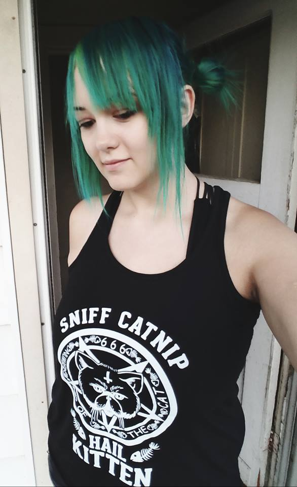
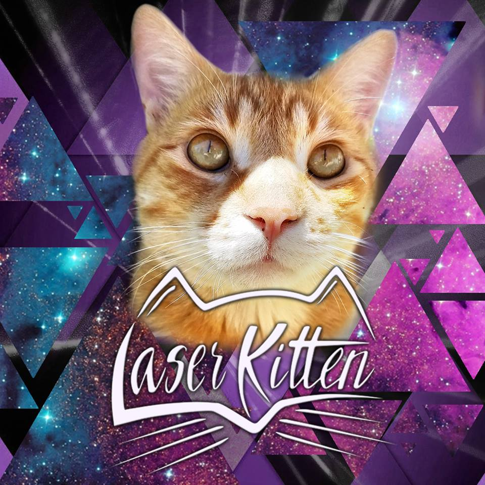
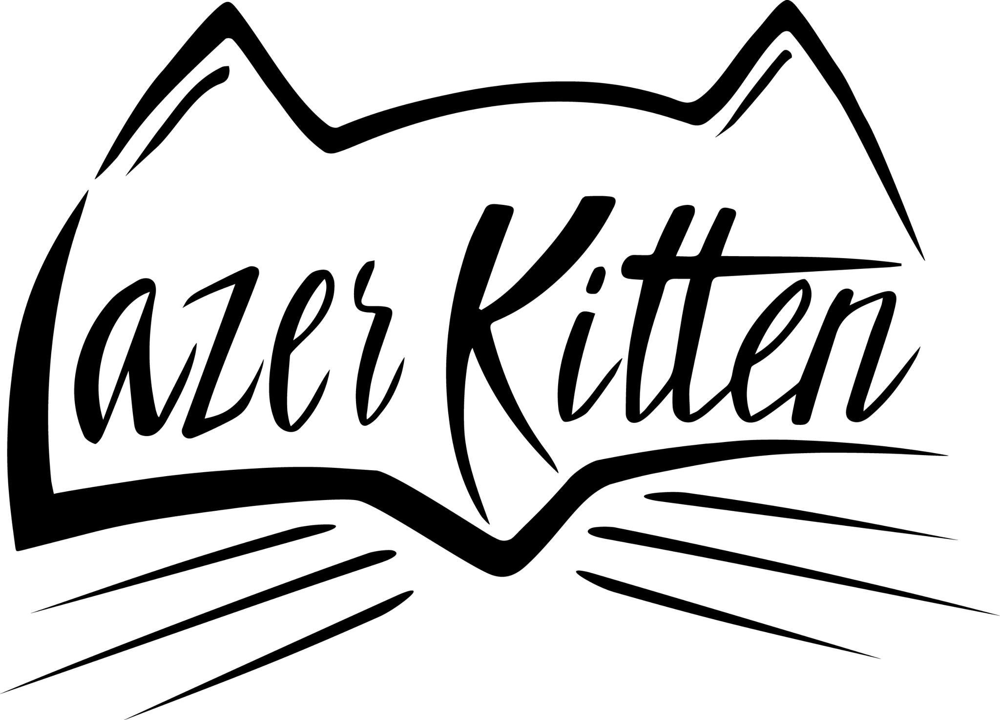

Lazer Kitten
  
Kat Fechner, better know as Lazer Kitten, has always considered herself an artist and a musician. Growing up, she started violin lessons at a young age and made it into a state award winning orchestra.
After falling in love with electronic music she began to produce her own music and decided to work towards a degree in music production and sound engineering.
While in school she started working with event companies hosting and promoting parties and raves. It wasn’t long before she was performing on stage herself.
In November of 2015 she decided launch her dream project, Lazer Kitten, in full force as part of her graduation project. With her first release being a remix of the popular song "Lean On" by Major Lazer & DJ Snake feat. MO.
Kat is a wild, free spirited woman with crazy hair that changes with the season. Pink, blue, purple, or green, her hair is always evolving just like her music. As a fan of almost every style of music, she takes influence from edm, hip hop, jazz, and rock music. Not wanting to be limited to one style or genre, she creates music she wants to listen to, in hopes others will enjoy and connect with it emotionally.
~ Wanna check out this artist? Have some links! ~
official website soundcloud Facebook Twitter Youtube Instagram